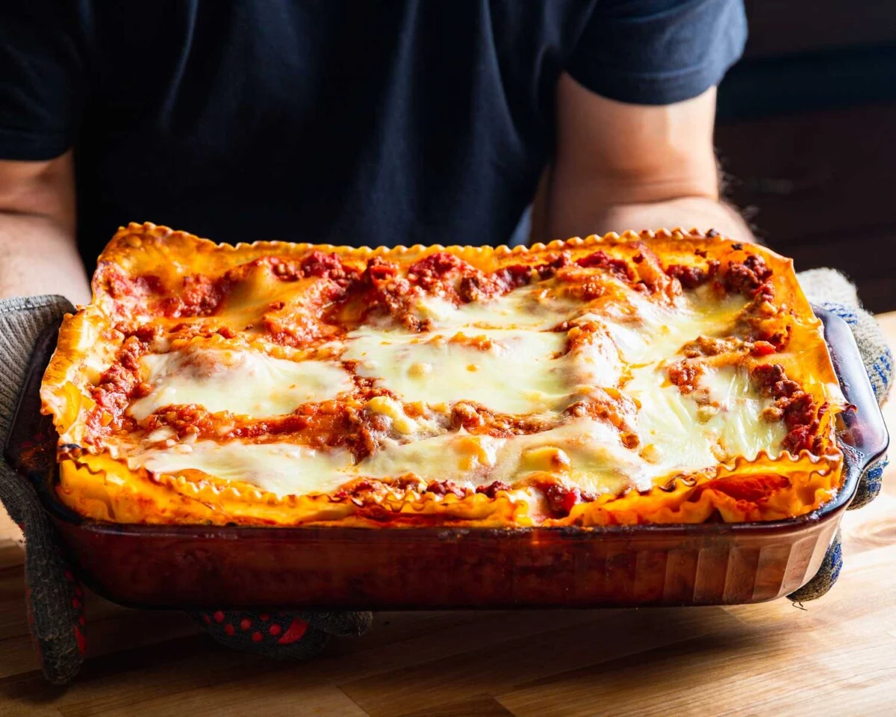

Lasagna

Description
A Lasagna wich is worth the efort
24h Lasagna
The Meatsauce
3 carrots
3 celery sticks
2 onions
1kg ground meat
1 glas dried tomatos
1.5l beef stock
1.5l tomato sauce
2tb tomato paste
1 Glas of red wine
The Bechamelsauce
100g Butter
100g flour
1.5l Milk
100g of Parmesan
Pepper
nutmag
Salt
Steps
The Meatsauce
cut your vegetables in 0.5cm thick cubs
cock ur ground meat in a metal cooking pot untill it gets brow so it gets some flavor
put the Meat aside and cock now ur vegetables in the cooking pot
add some oliveoil and butter
also add the dried Tomatos which you cut also in small pices also add the oil of them for flavor
after a few minutes add the tomato paste and let it cook another few minutes
Now add the meat back in
now add the beef stock (if you can add only 500ml off it and let the water cook away do that 3 times)
After that add the glas of wine and let it reduce
After it has reduced add the tomato sauce
Let it cook atleast 6h the longer the better
The Bechamelsauce
Add the Butter in to the cooking pot and let it brown(browning Butter adds a nuty flavor to your sauce)>
After your butter is lightly brown add your flour and let it cook for 1 or 2 Minutes so the flour tast disappears
Now add little by little some Milk so it doesn`t get clupy
After you poured all the milk in add your parmesan add let it cook for a few minutes
Now add your spices (pepper, nutmag and salt)